01ภาพรวม
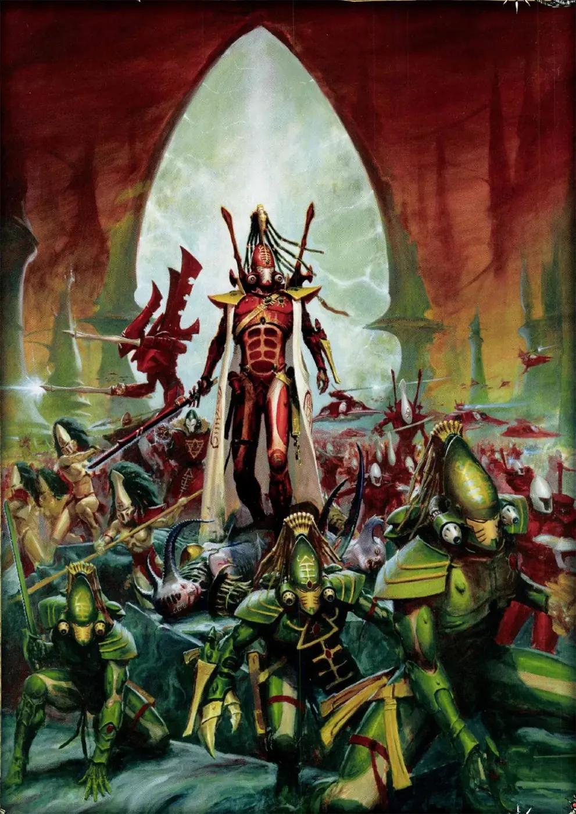
เผ่าพันธุ์ที่เคยปกครองกาแล็กซี แต่ความเสื่อมของตัวเองให้กำเนิดเทพปีศาจ Slaanesh — ตอนนี้กำลังดิ้นรนไม่ให้สูญพันธุ์
02ต้นกำเนิด
Aeldari ถูกสร้างหรือยกระดับโดย Old Ones ให้เป็นนักรบพลังจิตในสงคราม War in Heaven กับ Necrons หลังสงครามพวกเขาสร้างจักรวรรดิที่ยิ่งใหญ่ที่สุดในกาแล็กซีเป็นเวลาหลายล้านปี
เมื่อไม่มีศัตรูเหลือ สังคมจมลงในการเสพสุขไม่มีที่สิ้นสุด พลังจิตของพวกเขาสะท้อนใน Warp จนก่อตัวเป็นเทพองค์ใหม่ — เมื่อ Slaanesh ถือกำเนิดราว M30 (ช่วงที่มนุษย์อยู่ในยุค Age of Strife) เสียงกรีดร้องของมันกลืนวิญญาณชาว Aeldari นับพันล้าน และหัวใจของอาณาจักรกลายเป็นรอยแยก Eye of Terror — เหตุการณ์นี้เรียกว่า The Fall
03เนื้อเรื่องเจาะลึก
The Fall — การถือกำเนิดของ Slaanesh
เมื่อ 10,000 ปีก่อน อาณาจักร Aeldari ครองกาแล็กซี ความสบายทำให้พวกเขาหมกมุ่นในความสุขและความโหดร้ายทุกรูปแบบ อารมณ์รวมของเผ่าสร้างเทพองค์ใหม่ใน Warp คือ Slaanesh ในวินาทีที่มันเกิด คลื่นพลังจิตทำลายชาว Aeldari หลายพันล้านและเปิด Eye of Terror ขึ้นกลางอาณาจักร
ผู้รอดชีวิตสามกลุ่ม
กลุ่มที่เห็นหายนะล่วงหน้าหนีด้วยยานมหึมา Craftworlds กลุ่มที่อยู่ดาวชายขอบกลายเป็น Exodites ใช้ชีวิตเรียบง่าย ส่วนกลุ่มที่ซ่อนใน Webway ยังคงหาความสุขแบบเดิมและกลายเป็น Drukhari
ความหวังใหม่: Ynnead
ชาว Aeldari บางกลุ่มเชื่อว่าเมื่อชาวเผ่าตายครบ เทพแห่งความตาย Ynnead จะตื่นและทำลาย Slaanesh ได้ ขบวนการ Ynnari ของ Yvraine พยายามปลุกเทพองค์นี้ก่อนเวลา
04ยุค 30K — ในยุค Great Crusade และ Horus Heresy

ในยุค 30K The Fall เพิ่งผ่านมาไม่ถึงพันปี ชาว Aeldari ที่เหลือรอดกระจัดกระจายและหลบซ่อน แต่ Farseer หลายคนมองเห็นนิมิตของ Horus Heresy และแอบแทรกแซงเพื่อผลประโยชน์ของเผ่าตัวเอง
ดูภาพรวมยุค 30K ทั้งหมดที่ เนื้อเรื่องยุค 30K และความต่างของสองยุคที่ เปรียบเทียบ 30K vs 40K
05นิสัยและวัฒนธรรม
- Asuryani (อะซูรยานิ): ผู้อาศัยบนยาน Craftworld ขนาดเท่าดาวที่หนีรอดจาก The Fall ใช้ชีวิตตาม Path (วิถี) ทีละอาชีพเพื่อควบคุมอารมณ์
- Exodites: ผู้ที่ออกไปใช้ชีวิตเรียบง่ายบนดาวห่างไกลก่อน The Fall
- Corsairs: โจรสลัดที่ละทิ้งวิถี
- พกหินวิญญาณ (Spirit Stone) เพื่อไม่ให้วิญญาณถูก Slaanesh กลืนตอนตาย
06จุดที่น่าสนใจ
- วิญญาณผู้ตายถูกเก็บไว้ใน Infinity Circuit ของ Craftworld และบางครั้งถูกปลุกมาขับหุ่น Wraithguard
- Farseer มองเห็นอนาคตและชักใยเหตุการณ์ — มักยอมให้มนุษย์ตายเป็นล้านเพื่อรักษาชีวิต Aeldari ไม่กี่คน
- ใช้ Webway เครือข่ายอุโมงค์ระหว่างมิติเดินทาง
07ความสามารถพิเศษ
สิ่งที่ทำให้ Aeldari แตกต่างจากทัพอื่น — ทั้งพลังที่ติดตัวมาทั้งเผ่า/ทัพ และความสามารถของบุคคลสำคัญ
ของทั้งเผ่า/ทัพ
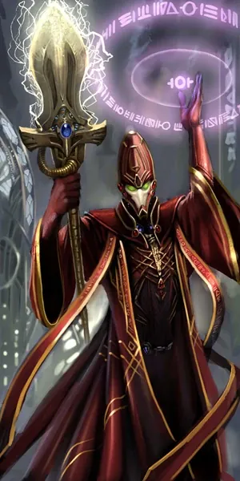
เผ่าพันธุ์แห่งพลังจิต
Aeldari ทุกคนมีพลังจิตแฝงในตัว บางคนพัฒนาเป็นผู้หยั่งรู้อนาคต (Farseer) ที่มองเห็นเส้นทางแห่งชะตาหลายสายและเลือกทางที่ดีที่สุด — แต่พลังนี้ทำให้วิญญาณของพวกเขา "สว่าง" ใน Warp และดึงดูดปีศาจ
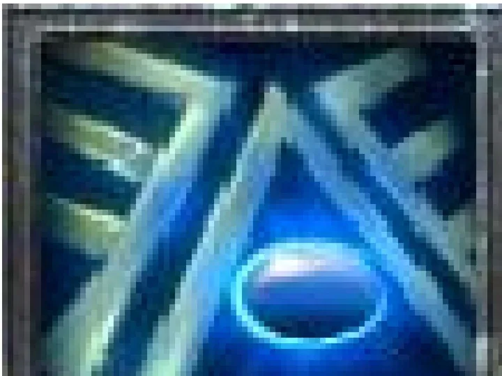
Spirit Stone — ป้องกัน Slaanesh
เมื่อ Aeldari ตาย วิญญาณจะถูก Slaanesh "ดื่มกิน" ทุกคนจึงสวมหินวิญญาณบนอก เมื่อตาย วิญญาณจะเข้าไปอยู่ในหินแทน แล้วถูกเก็บใน Infinity Circuit ของ Craftworld

Webway — เส้นทางลับระหว่างดาว
เครือข่ายอุโมงค์มิติที่ Old Ones สร้างไว้ระหว่างโลกจริงกับ Warp ทำให้เดินทางข้ามกาแล็กซีได้โดยไม่ต้องผ่าน Warp ที่อันตราย และโผล่ออกมาบนดาวใดก็ได้ที่มีประตู
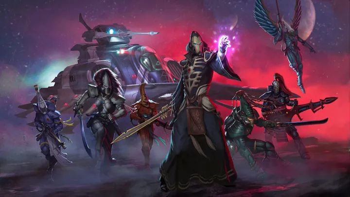
The Path — ชีวิตทีละอาชีพ
เพื่อควบคุมอารมณ์ที่รุนแรงกว่ามนุษย์มาก ชาว Craftworld ใช้ชีวิตทีละ "เส้นทาง" อย่างสุดตัว เช่น นักรบ ช่าง ศิลปิน นักบิน แล้วค่อยเปลี่ยน ผู้ที่ติดอยู่บนเส้นทางใดตลอดไปจะกลายเป็น Exarch (นักรบ) หรือ Seer (หมอผี)
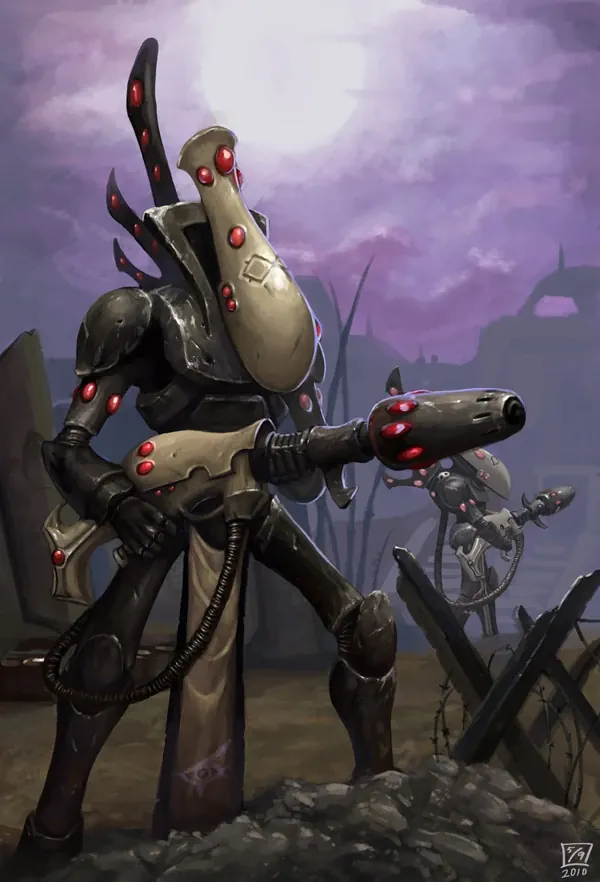
นักรบที่ตายแล้วยังรบได้
วิญญาณผู้ตายในหินวิญญาณถูกใส่ในหุ่น Wraithguard และ Wraithlord ให้ลุกขึ้นรบอีกครั้ง — ทางเลือกของเผ่าที่ใกล้สูญพันธุ์
ของบุคคลสำคัญ

Eldrad Ulthran
Farseer ผู้ยิ่งใหญ่Farseer แห่ง Craftworld Ulthwé ผู้วางแผนระยะยาวหลายพันปี ปรากฏในเหตุการณ์สำคัญมากมาย และเกี่ยวข้องกับแผนปลุกเทพ Ynnead

Asurmen
Phoenix Lord คนแรกผู้ก่อตั้งเส้นทางนักรบ Aspect Warrior เมื่อ Phoenix Lord ตาย ชุดเกราะของเขาจะหาร่างใหม่และเขากลับมาเกิดอีกครั้ง

Jain Zar
Storm of SilencePhoenix Lord แห่ง Howling Banshees นักรบที่ว่องไวที่สุด ใช้กรีดร้องทำให้ศัตรูชะงัก

Illic Nightspear
Walker of the Hidden PathRanger ในตำนานผู้ยิงศัตรูด้วยปืนสไนเปอร์ Voidbringer จากระยะไกลลิบ
08หน่วยและบทบาทในกองทัพ
ชาว Aeldari บนยาน Craftworld เดินบน "เส้นทาง" (Path) — ใช้ชีวิตทีละอาชีพอย่างสมบูรณ์เพื่อควบคุมอารมณ์ไม่ให้ Slaanesh กลืนกิน เช่น เป็นช่าง ศิลปิน นักรบ หรือหมอผี แล้วค่อยเปลี่ยนเส้นทาง
Farseer
ฟาร์เซียร์ผู้หยั่งรู้อนาคต มองเส้นทางชะตาหลายสายแล้วเลือกทางที่ดีที่สุดให้เผ่า เช่น Eldrad Ulthran
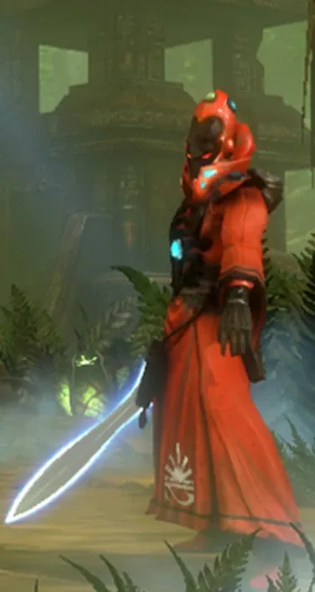
Warlock
วอร์ล็อกนักรบผู้ใช้พลังจิตที่อยู่บน Path of the Seer คอยปกป้องและหนุนพลังให้ Guardian
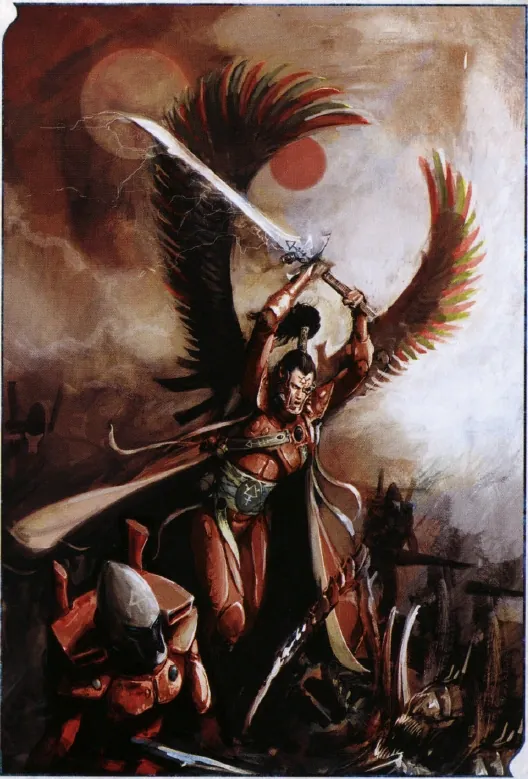
Autarch
ออทาร์กแม่ทัพที่ผ่าน Aspect Warrior มาหลายสาย จึงเข้าใจการรบทุกรูปแบบ
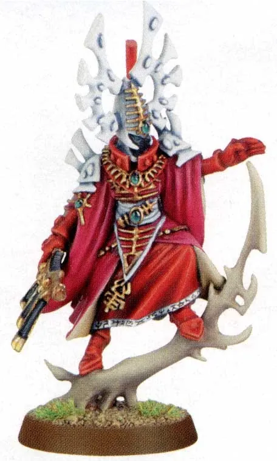
Bonesinger
โบนซิงเกอร์"ช่าง" ของ Aeldari ใช้พลังจิตร้องเพลงปั้นวัสดุ Wraithbone ให้เป็นยาน อาวุธ และซ่อมแซม Craftworld
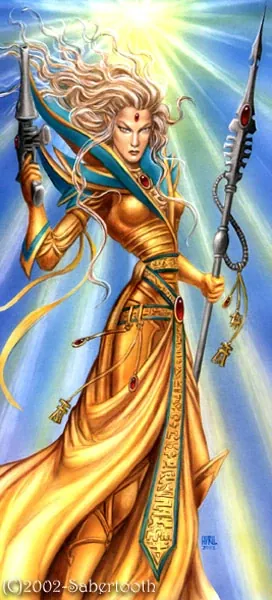
Spiritseer
สปิริตเซียร์ผู้นำทางวิญญาณ นำหุ่น Wraith ที่มีวิญญาณผู้ตายควบคุม
Aspect Warrior / Exarch
แอสเปกต์วอร์ริเออร์ / เอ็กซาร์กนักรบที่สวมหน้ากากเทพสงคราม Khaine แต่ละศาลเจ้า (Shrine) มีวิชาต่างกัน เช่น Dire Avengers, Howling Banshees, Fire Dragons — Exarch คือผู้ที่ติดอยู่บนเส้นทางนักรบตลอดไป
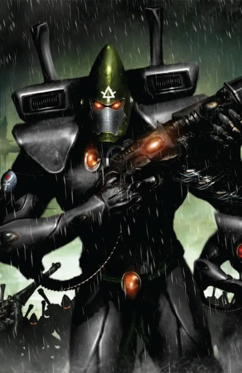
Guardians
การ์เดียนพลเรือนที่จับอาวุธยามสงคราม ใช้ปืน Shuriken Catapult
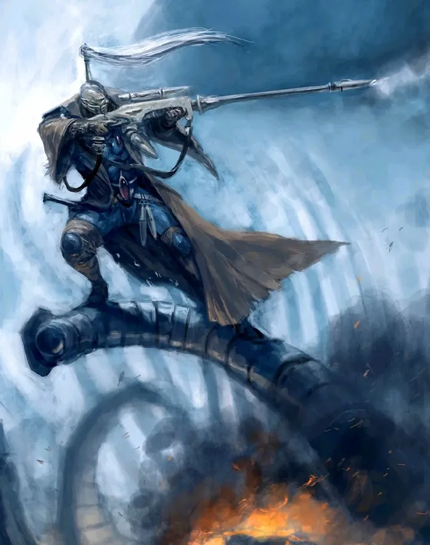
Rangers
เรนเจอร์Aeldari ที่ออกจาก Craftworld ไปท่องกาแล็กซี กลับมาเป็นพลซุ่มยิงและลาดตระเวน
Wraithguard / Wraithlord
เรธการ์ด / เรธลอร์ดหุ่นที่ขับเคลื่อนด้วยวิญญาณของผู้ตายซึ่งเก็บใน Spirit Stone — เป็นการใช้คนตายรบแทนเพราะเผ่ามีคนน้อย
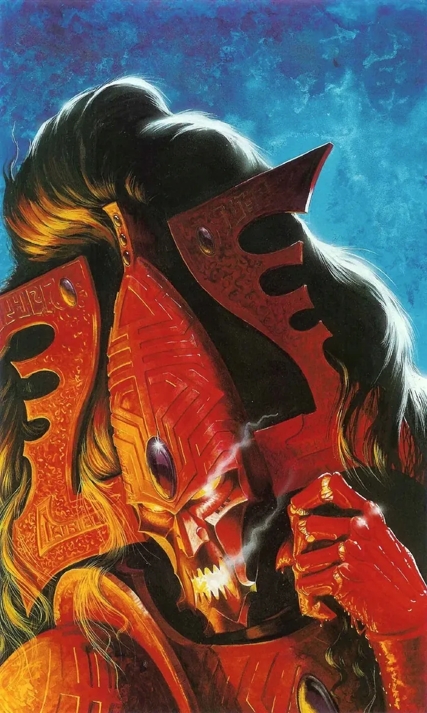
Avatar of Khaine
อวตารแห่ง Khaineร่างเหล็กหลอมของเทพสงครามที่ถูกปลุกในยามสงครามใหญ่
09วีรกรรมและเหตุการณ์สำคัญ
War in Heaven
รบเคียงข้าง Old Ones ต่อต้าน Necrons และ C'tan
The Fall
กำเนิด Slaanesh และ Eye of Terror
Iyanden
Craftworld Iyanden เกือบถูก Hive Fleet Kraken ทำลาย
กำเนิด Ynnari
Yvraine ปลุกพลังของเทพแห่งความตาย Ynnead
10ตัวละครสำคัญ
Eldrad Ulthran
Farseer แห่ง Ulthwéนักพยากรณ์ผู้ยิ่งใหญ่ที่สุด
Avatar of Khaine
อวตารแห่งเทพสงครามเศษชิ้นของเทพ Khaine ที่หลับใหลในทุก Craftworld
11ยุค 40K — สหัสวรรษที่ 41
ยุค 40K Aeldari เป็นเผ่าที่กำลังจะตายช้า ๆ Craftworld แต่ละลำต่อสู้เพื่อความอยู่รอด ใช้กองทัพขนาดเล็กแต่ชำนาญ และร่วมมือกับมนุษย์เป็นครั้งคราวเมื่อผลประโยชน์ตรงกัน
12เนื้อเรื่องล่าสุด (Era Indomitus / M42)
หลังการเกิด Great Rift ชาว Aeldari บางส่วนเข้าร่วม Ynnari ด้วยความหวังว่า Ynnead จะทำลาย Slaanesh ได้ ขณะที่ Craftworld ส่วนใหญ่ยังยึดวิถีเดิม และ Aeldari หลายกลุ่มถูกดึงเข้าสงครามกับทั้ง Chaos และ Tyranids
หลังการเกิด Great Rift ปฏิทินของจักรวรรดิคลาดเคลื่อน เหตุการณ์ยุคปัจจุบันจึงมักระบุเพียง 'M42' ไม่มีปีที่แน่นอน
13Craftworld สำคัญ
Craftworld คือยานยักษ์ที่ Aeldari ใช้หนีการล่มสลายของอาณาจักร แต่ละลำมีวัฒนธรรมและวิธีรบของตัวเอง
Ulthwé
ชื่อเต็มคือ Ulthanash Shelwé "บทเพลงของ Ulthanash" เป็นหนึ่งใน Craftworld ที่ใหญ่ที่สุด ลอยอยู่ใกล้ขอบตะวันออกของ Eye of Terror จนพลังจิตของชาวเมืองสูงผิดปกติ Craftworld อื่นจึงเรียกพวกเขาว่า "the Damned" แต่ชาว Ulthwé ถือว่าตนเป็นปราการระหว่างเผ่าพันธุ์กับหายนะ และมักแอบแทรกแซงเหตุการณ์ในกาแล็กซี
Biel-Tan
Craftworld ที่ก้าวร้าวที่สุด มุ่งฟื้นอาณาจักร Aeldari กลับมาและทำสงครามกวาดล้างเผ่าอื่นไม่หยุด อักษรประจำ Craftworld หมายถึง "การเกิดใหม่ของยุคโบราณ" เกือบถูกทำลายในปี 999.M41 ระหว่าง Black Crusade ครั้งที่ 13
Iyanden
เคยเป็นยานที่ยิ่งใหญ่ที่สุดของ Aeldari แต่ถูก Chaos และ Ork โจมตี และ Hive Fleet Kraken ทำให้พินาศ ปัจจุบันเงียบเหงา คนเป็นเหลือน้อย ต้องพึ่งนักรบวิญญาณ (Wraith) จากคนตาย และใกล้สูญพันธุ์
Saim-Hann
วัฒนธรรมนักรบแบบตระกูล มี Wild Riders บน Jetbike ที่ขึ้นชื่อเรื่องความดุดันและการรบเร็ว โจมตีแบบงูฉก แล้วถอยพ้นระยะ สัญลักษณ์คืองู ชื่อหมายถึง "การแสวงหาความรู้แจ้ง"
Alaitoc
ส่งคนไปเป็นหูเป็นตาทั่วกาแล็กซีมากกว่า Craftworld อื่น ในสนามรบเน้นการพรางตัวและหลอกล่อมากกว่าพละกำลัง สีประจำคือน้ำเงินกับเหลือง
ที่มา: บทความใน Warhammer 40k Wiki
14แกลเลอรี